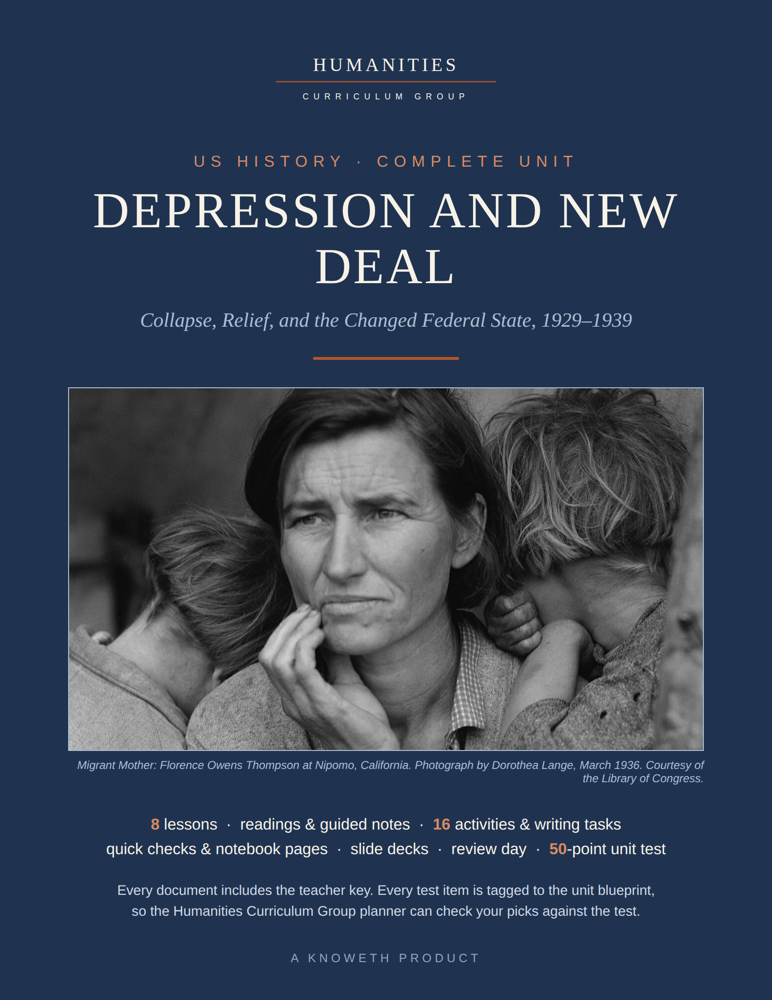

The eleventh unit in the course, included with All-Access. Eight lessons, a review day, and the unit test, fifty-one documents in all, plus a slide deck with full speaker notes and a teacher notes document for every lesson. Every PDF includes the teacher key, and every document follows the same print standard as the sample unit: black text, open writing space, no ink-heavy design. If you are new here, the Progressive Era unit is the free sample, and it runs on the same plate and the same planner. Primary source work for this unit lives in the bank at The Primary Source Project, which holds audited sources for this era.
Get this unit with All-Access See the free sample unit Plan this unit
The crash of October 1929 broke the stock market. The Depression was what followed, when bank failures, deflation, and collapsing demand turned a market collapse into a decade of collapse: production cut nearly in half, farm prices below the cost of growing food, and unemployment reaching one worker in four in 1933. The unit follows the collapse into ordinary life: breadlines, Hoovervilles, evictions, and the Dust Bowl migration west. Its first question is whether a collapse of this size was a private misfortune to be waited out or a public emergency the government had a duty to answer.
Hoover gets a lesson on his own terms. He believed federal relief would weaken character and unbalance the budget, so he asked business, charities, and local government to carry relief by cooperation, not compulsion. Students test that program of voluntarism against the size of the collapse, weighing the Farm Board, public works, and the Reconstruction Finance Corporation against what voluntarism could not reach, and the lesson ends with the Bonus Army and the winter of 1932 and 1933. Roosevelt's answer follows: the bank holiday, the Emergency Banking Act passed in a day, the first fireside chat, and then the Hundred Days, when Congress rebuilt banking, raised farm prices, and took on a whole river valley in one season.
The middle of the unit watches the New Deal at work and under attack. One lesson follows the alphabet agencies into people's lives, keeping the distinction the work ran on, direct relief against work relief: FERA money, CCC camps, CWA winter jobs, PWA construction, and the NRA codes, measured against the millions no agency reached. The next lesson takes up the critics of 1935: Long, Townsend, and Coughlin charging too little, the Liberty League and the Supreme Court charging too much, and that two-front pressure explains the Second New Deal of 1935, the WPA, the Wagner Act, and the Social Security Act, the settlement that made those duties permanent.
In 1937 the Wagner Act in workers' hands produced the sit-down strikes and Flint, and the same year brought the court packing fight and a recession inside the Depression. The final lesson weighs the changed country, insured deposits, regulated securities markets, a safety net, a landscape of dams and schools still in daily use, against the limits: unemployment never fell below fourteen percent in the decade, the exclusions written into the settlement fell hardest on Black workers and women, and full employment arrived only with war spending. The unit is organized around the essential question, “How did the New Deal change the relationship between Americans and their federal government, and what did it leave undone?” Each lesson has a reading, guided notes, slides with full speaker notes, an activity, a notebook page, a quick check, and a writing task. A review day gives students a study guide and crossword before the 50-point unit test. Every test item is tagged in the key to a published 15-entry blueprint, so students and teachers can see what the test asks and where that material was taught. The planner turns those choices into a calendar and checks the selected work against the blueprint, naming any gap while there is still time to close it.

Print it for the front of the unit packet, or keep it as the first page of the digital bundle. The cover ships with the unit in All-Access. The three previews further down show the full plate, two real pages from the lessons, and the test key's blueprint tags.
Test blueprint: the depth of the collapse: bank failures, deflation, falling production, and mass unemployment; the human cost: breadlines, Hoovervilles, eviction, family strain, and Dust Bowl migration
Test blueprint: Hoover's program: voluntarism, the Farm Board, public works, and the Hawley-Smoot Tariff; the limits of Hoover's response: the RFC, the Bonus Army, the election of 1932, and the interregnum
Test blueprint: the banking rescue: the bank holiday, the Emergency Banking Act, and the first fireside chat; the Hundred Days: the AAA, the TVA, the NIRA, and deposit insurance in one legislative season
Test blueprint: relief at work: direct relief, work relief, and the FERA, CCC, CWA, and PWA in people's lives; the reach and the gaps: the NRA codes, uneven and segregated delivery, and unemployment still high in 1934
Test blueprint: the critics who said too little: Long and Share Our Wealth, the Townsend Plan, and Coughlin; the critics who said too much: the Liberty League and the Supreme Court in Schechter and Butler
Test blueprint: the Second New Deal: the WPA and the Social Security Act of 1935; labor rights in law: the Wagner Act, collective bargaining, and the labor board
Test blueprint: labor rising: the CIO, the sit-down strikes, Flint, and the cost at Republic Steel; the hard year: the court packing fight and the Roosevelt recession of 1937 to 1938
Test blueprint: legacy and limits: the changed federal role, the safety net, the exclusions, and the recovery that waited for war
The test is 50 points: matching, multiple choice, and a source-based section built on the First Fireside Chat on the banking crisis (March 12, 1933), the Social Security Act of 1935, Title I, Section 1, from the United States Statutes at Large, Volume 49, and Dorothea Lange's photograph of Florence Owens Thompson at Nipomo, California, March 1936.
Three pages from the listing, built from the actual documents.
The fifteen entries the unit test assesses. Every assignment above is tagged to the entries it teaches, which is what the planner's coverage check reads.
| # | Blueprint entry | Taught in |
|---|---|---|
| 1 | The depth of the collapse: bank failures, deflation, falling production, and mass unemployment | Lesson 1 |
| 2 | The human cost: breadlines, Hoovervilles, eviction, family strain, and Dust Bowl migration | Lesson 1 |
| 3 | Hoover's program: voluntarism, the Farm Board, public works, and the Hawley-Smoot Tariff | Lesson 2 |
| 4 | The limits of Hoover's response: the RFC, the Bonus Army, the election of 1932, and the interregnum | Lesson 2 |
| 5 | The banking rescue: the bank holiday, the Emergency Banking Act, and the first fireside chat | Lesson 3 |
| 6 | The Hundred Days: the AAA, the TVA, the NIRA, and deposit insurance in one legislative season | Lesson 3 |
| 7 | Relief at work: direct relief, work relief, and the FERA, CCC, CWA, and PWA in people's lives | Lesson 4 |
| 8 | The reach and the gaps: the NRA codes, uneven and segregated delivery, and unemployment still high in 1934 | Lesson 4 |
| 9 | The critics who said too little: Long and Share Our Wealth, the Townsend Plan, and Coughlin | Lesson 5 |
| 10 | The critics who said too much: the Liberty League and the Supreme Court in Schechter and Butler | Lesson 5 |
| 11 | The Second New Deal: the WPA and the Social Security Act of 1935 | Lesson 6 |
| 12 | Labor rights in law: the Wagner Act, collective bargaining, and the labor board | Lesson 6 |
| 13 | Labor rising: the CIO, the sit-down strikes, Flint, and the cost at Republic Steel | Lesson 7 |
| 14 | The hard year: the court packing fight and the Roosevelt recession of 1937 to 1938 | Lesson 7 |
| 15 | Legacy and limits: the changed federal role, the safety net, the exclusions, and the recovery that waited for war | Lesson 8 |